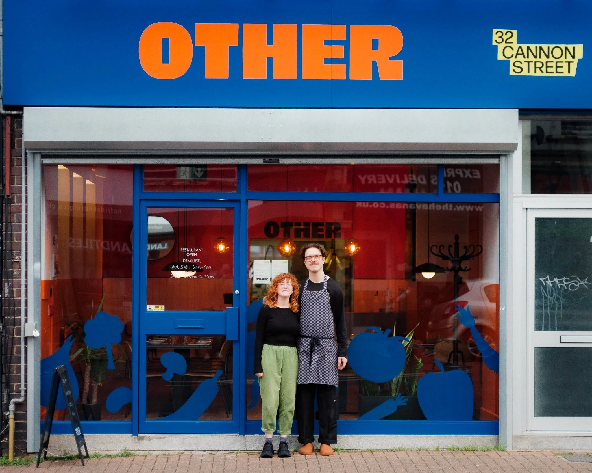
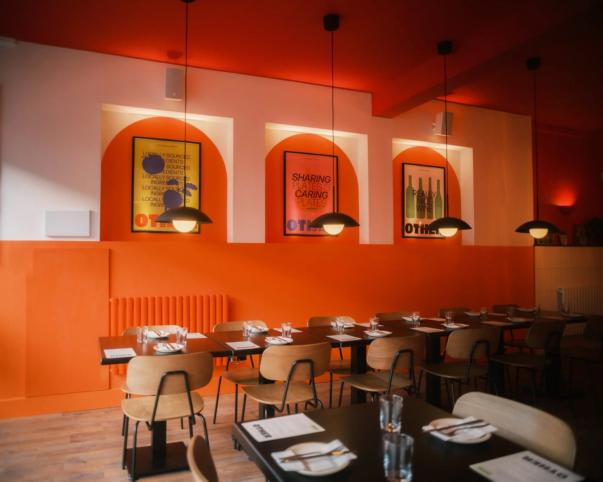
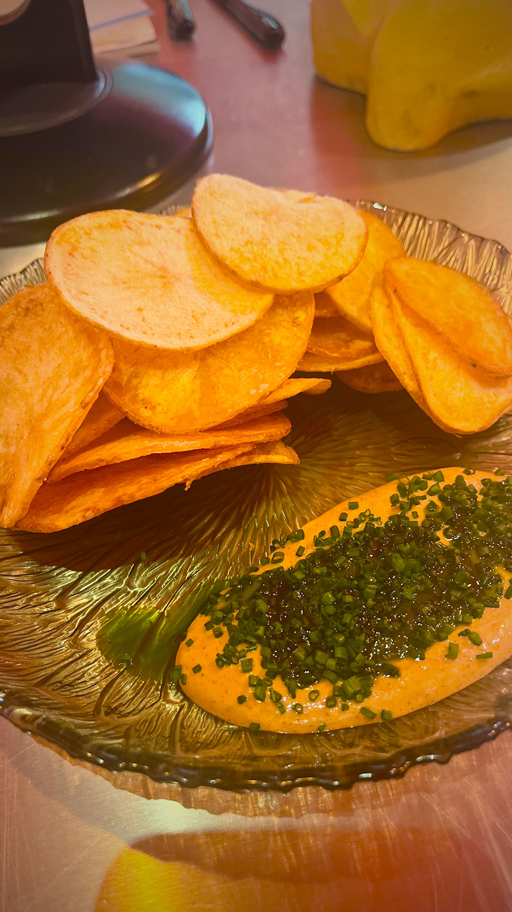
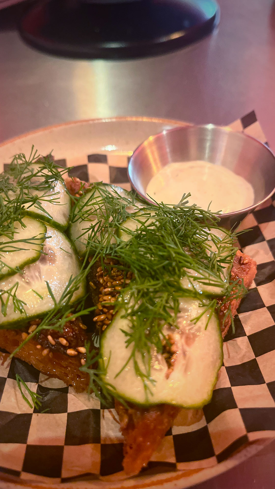
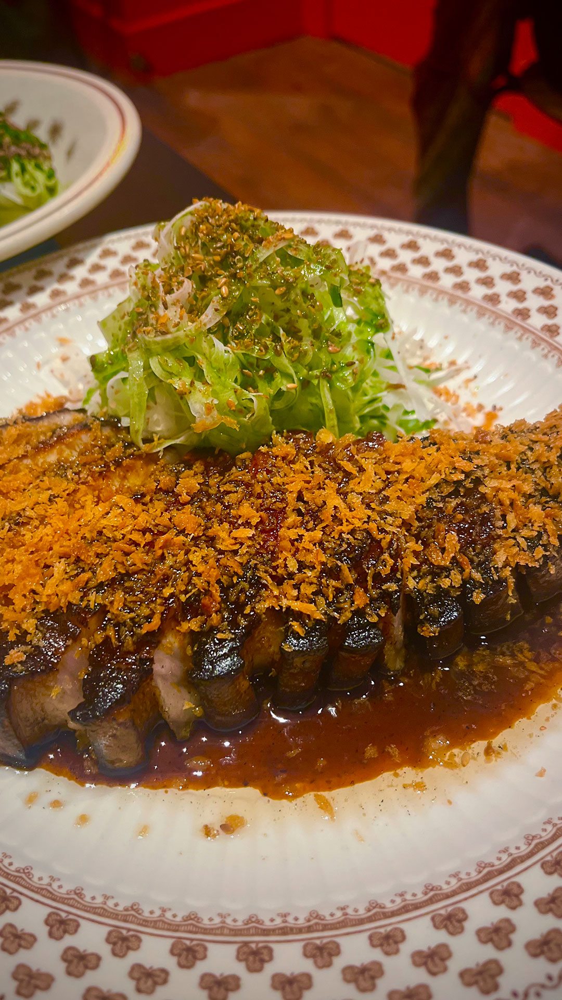
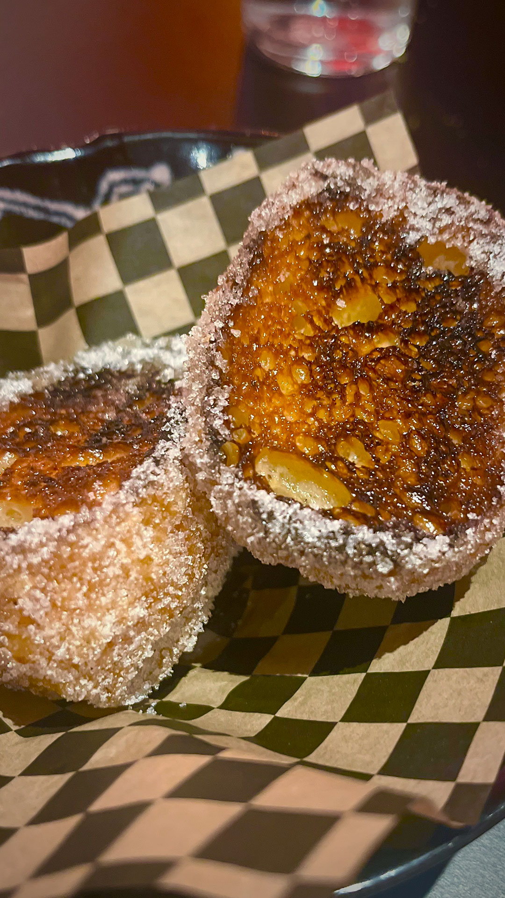

Other, Bristol: Is this the best city in the UK for indie restaurants?
This small Bedminster restaurant is joyful, inventive and undeniably cool
The people of Bristol like to eat well, in the way fish like water. They live for bowls of hand-cut pasta and enthusiastically glazed pork chops; for smoky roasted vegetables, and whipped cod’s roe and ultra-laminated deep-fried potato dishes which take an age to make and seconds to eat. They must do. It’s the only explanation for the way the city is infested with small but perfectly formed independent restaurants which stay that way. Occasionally, a Bristolian chef or restaurateur may open a second or even a third outpost, but for the most part it’s not the place for empire building. It’s where you go for bespoke nights out.
The big restaurant brands have their eye on it, of course. Recently, the Bristol-based journalist Meg Houghton-Gilmour took to Substack to describe an area in the city’s heart as “Little London” because it’s pockmarked with well-known chains newly arrived from the capital. But for each one, she said, there was a better local alternative: ignore ramen group Tonkotsu and go to Ramen Monster; give Rosa’s Thai a miss and go to Jean’s Bistro; avoid Bella Italia and go to Pasta Ripiena. It was a good point, well made.
We can grasp at cultural explanations for Bristol’s impressively robust independent restaurant culture. It has long had a tradition of going its own way. In 1831 the city’s people rioted for voting rights. In 1963 they boycotted the bus service over its racist employment practices. They throw statues of slavers into the harbour. They don’t produce boy bands; they produce Massive Attack and Portishead. Or perhaps it’s more banal than that: there are so many escapees from London still with higher-paying jobs in the capital who can afford to dine out and support young chefs being the very best version of themselves.

Either way, Bristol produces restaurants like Other, which opened at the tail-end of 2024 in the city’s pleasingly utilitarian Bedminster district. The head chef, Zak Hitchman, previously ran the kitchen at the now closed Casamia, one of Bristol’s rare Michelin-starred restaurants, but this is a different proposition. The food, like the red ceiling and the bright orange walls, isn’t subtle or demure. It doesn’t know what the words mean. The menu practically vibrates with vigour and enthusiasm. But it’s also comforting. It’s food designed to set you right at the end of a trying day.
The mood is set by a plate of their thick-cut crisps, the golden brown of newly polished amber. They come with a thick dollop of Indian spiced aioli, laid in turn with a sweet coriander chutney and a lawnmower-full of chopped chives.

The seafood in prawn toast is replaced with minced spiced chicken, which is crusted with sesame seeds and deep fried. On the top are rings of sweet-sour dill pickled cucumbers, like a Chinese takeaway went into business with a Jewish deli. Slabs of celeriac are smoked until fudgy and draped with translucent slices of piggy lardo, leaves of bitter radicchio and segments of blood orange. This parade of big-fisted ingredients heaped one atop the other could feel like a house party where nobody is watching the door for gate-crashers. But Hitchman has the good taste to know the difference between plenty and too much. He always stops at plenty.

A main-course char siu pork chop isn’t quite what it claims. It lacks the glossy stickiness that industrial volumes of maltose give the Cantonese classic. But there is a sweet soy slap to it, and glassy crackling and wobbly fat, if you have a taste for such things. The covering of golden fried breadcrumbs extends the crunch from the skin, and on the side is a well-dressed heap of shredded cabbage to soothe matters. Today’s special is barbecued red gurnard. It’s a little overcooked, the only mis-step of the night, but there’s enough going on across the plate, with its spiced, buttery pumpkin sauce and tempura pumpkin, to distract you.

We have shattering blocks of confit potato, and a plate of little gem lettuce with a lemon dressing and “everything” bagel seasoning. At Other, they were always going to choose “everything” over merely “something”. Heavily sugared sourdough doughnuts come split and brûléed, as does the custardy part of an apple crumble crème brûlée. It’s the cheerful outcome of two much-loved desserts falling into bed together, and producing something which is the best of them both.

All the beers are local to Bristol, and the wine list stretches to a mighty eight bottles, only one of which breaches the £40 mark. Perhaps this neon-bright dining room with its flamboyant food and ineffable cool sounds like a lot. Perhaps it sounds like a little too much. But then not every restaurant has to be for every night. Other only seats a few dozen but those seats are full.
It’s really not hard to see why.